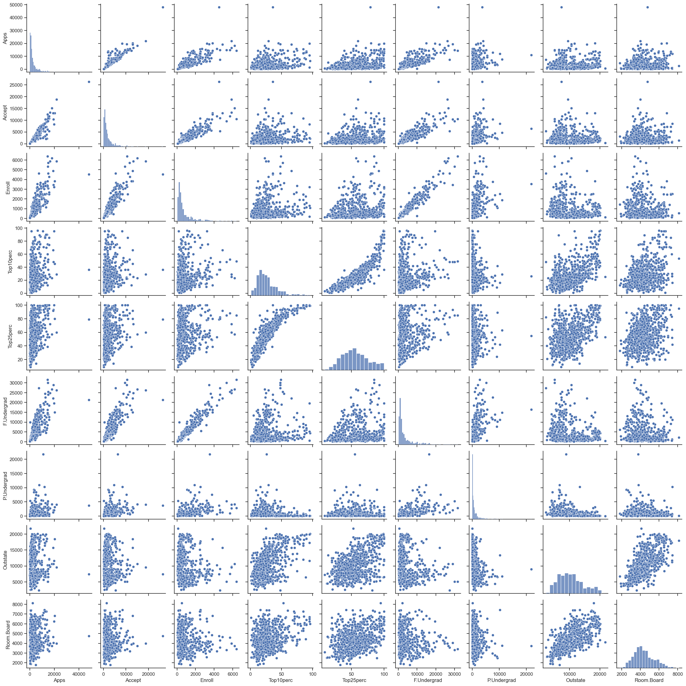
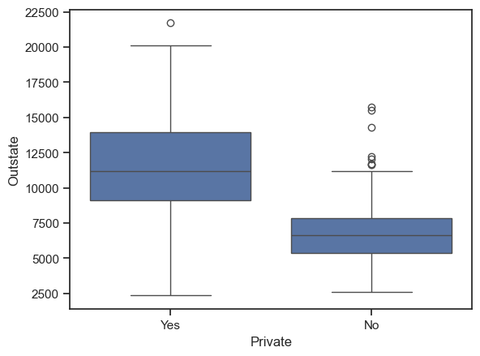
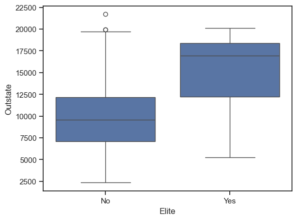
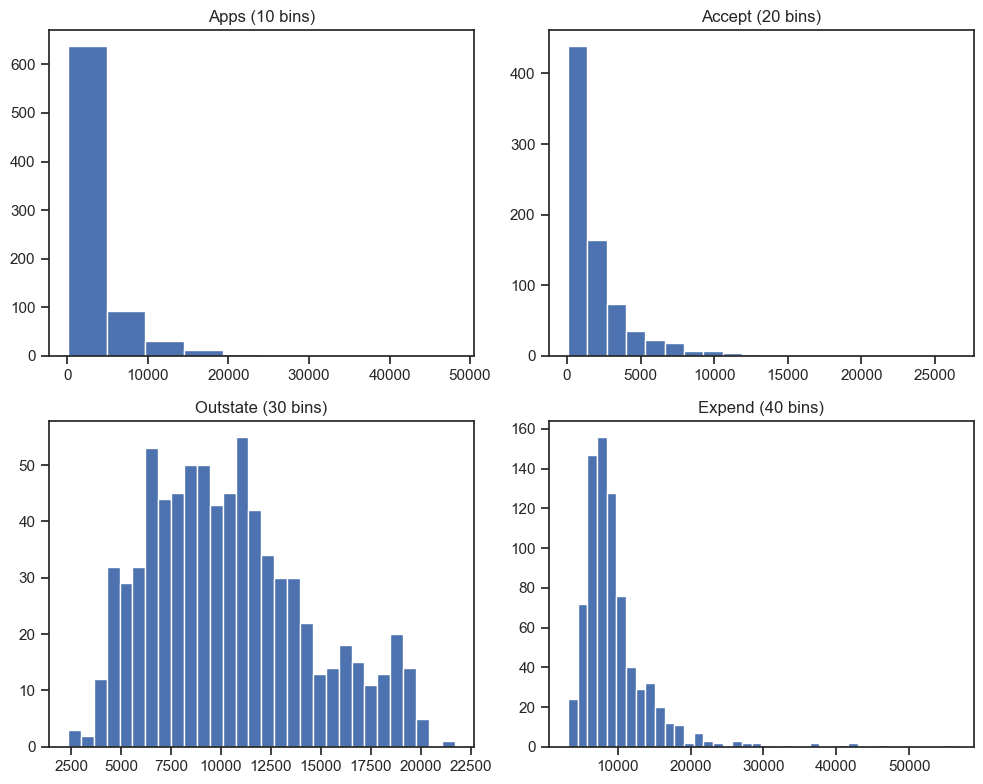
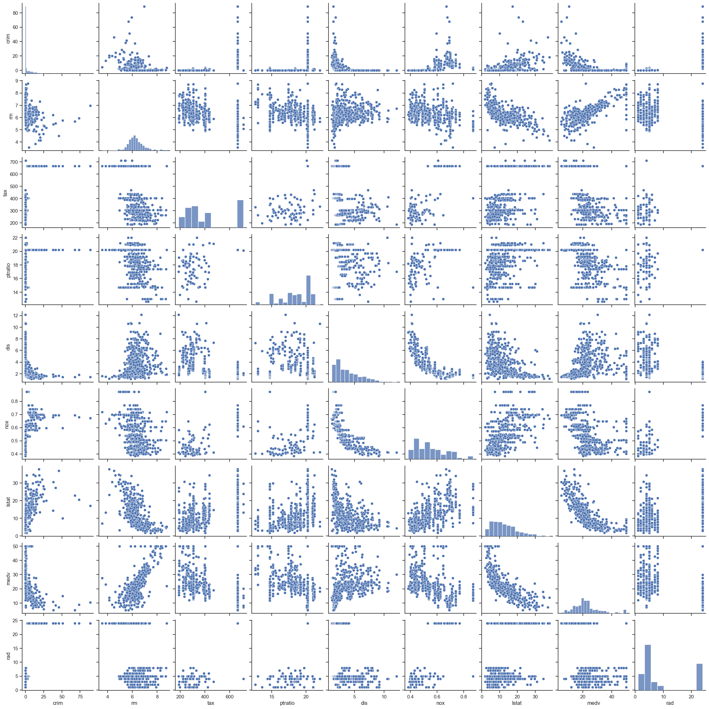

MDS5202 Assignment 1 (Python notebook)
Conceptual Question 1
Flexible method performs better because very large n and small p keep variance controlled while capturing structure.
Flexible method performs worse because extremely large p with small n yields high variance and overfitting.
Flexible method performs better since strong non-linearity needs adaptable models to reduce bias.
Flexible method performs worse because very high error variance amplifies a flexible model’s variance, harming test error.
Conceptual Question 3(a)
Five curves on one plot (x-axis: flexibility increasing, y-axis: error):
Squared bias: high on the left, falls monotonically toward zero.
Variance: low on the left, rises monotonically.
Training error: drops monotonically with flexibility.
Test error: U-shaped: falls then rises as variance dominates.
Bayes/irreducible error: horizontal line above zero, constant.
Conceptual Question 3(b)
Bias drops because flexible models approximate the true function better.
Variance rises because flexible models react more to sample noise.
Training error drops as fit tightens.
Test error falls first (bias down) then rises (variance up).
Bayes error reflects noise and does not change with flexibility.
Applied Question 8: College data (Python)
Ensure College.csv is in the working directory.
[1]:
import pandas as pd
import numpy as np
import seaborn as sns
import matplotlib.pyplot as plt
sns.set(style='ticks', color_codes=True)
[2]:
# Load data
college = pd.read_csv('College.csv')
college.head()
[2]:
| Unnamed: 0 | Private | Apps | Accept | Enroll | Top10perc | Top25perc | F.Undergrad | P.Undergrad | Outstate | Room.Board | Books | Personal | PhD | Terminal | S.F.Ratio | perc.alumni | Expend | Grad.Rate | |
|---|---|---|---|---|---|---|---|---|---|---|---|---|---|---|---|---|---|---|---|
| 0 | Abilene Christian University | Yes | 1660 | 1232 | 721 | 23 | 52 | 2885 | 537 | 7440 | 3300 | 450 | 2200 | 70 | 78 | 18.1 | 12 | 7041 | 60 |
| 1 | Adelphi University | Yes | 2186 | 1924 | 512 | 16 | 29 | 2683 | 1227 | 12280 | 6450 | 750 | 1500 | 29 | 30 | 12.2 | 16 | 10527 | 56 |
| 2 | Adrian College | Yes | 1428 | 1097 | 336 | 22 | 50 | 1036 | 99 | 11250 | 3750 | 400 | 1165 | 53 | 66 | 12.9 | 30 | 8735 | 54 |
| 3 | Agnes Scott College | Yes | 417 | 349 | 137 | 60 | 89 | 510 | 63 | 12960 | 5450 | 450 | 875 | 92 | 97 | 7.7 | 37 | 19016 | 59 |
| 4 | Alaska Pacific University | Yes | 193 | 146 | 55 | 16 | 44 | 249 | 869 | 7560 | 4120 | 800 | 1500 | 76 | 72 | 11.9 | 2 | 10922 | 15 |
[3]:
# Set university names as index and drop the first column
college.index = college.iloc[:, 0]
college = college.iloc[:, 1:]
college.index.to_series().head()
[3]:
Unnamed: 0
Abilene Christian University Abilene Christian University
Adelphi University Adelphi University
Adrian College Adrian College
Agnes Scott College Agnes Scott College
Alaska Pacific University Alaska Pacific University
Name: Unnamed: 0, dtype: object
[4]:
# Numerical summary of all variables
college.describe(include='all')
[4]:
| Private | Apps | Accept | Enroll | Top10perc | Top25perc | F.Undergrad | P.Undergrad | Outstate | Room.Board | Books | Personal | PhD | Terminal | S.F.Ratio | perc.alumni | Expend | Grad.Rate | |
|---|---|---|---|---|---|---|---|---|---|---|---|---|---|---|---|---|---|---|
| count | 777 | 777.000000 | 777.000000 | 777.000000 | 777.000000 | 777.000000 | 777.000000 | 777.000000 | 777.000000 | 777.000000 | 777.000000 | 777.000000 | 777.000000 | 777.000000 | 777.000000 | 777.000000 | 777.000000 | 777.00000 |
| unique | 2 | NaN | NaN | NaN | NaN | NaN | NaN | NaN | NaN | NaN | NaN | NaN | NaN | NaN | NaN | NaN | NaN | NaN |
| top | Yes | NaN | NaN | NaN | NaN | NaN | NaN | NaN | NaN | NaN | NaN | NaN | NaN | NaN | NaN | NaN | NaN | NaN |
| freq | 565 | NaN | NaN | NaN | NaN | NaN | NaN | NaN | NaN | NaN | NaN | NaN | NaN | NaN | NaN | NaN | NaN | NaN |
| mean | NaN | 3001.638353 | 2018.804376 | 779.972973 | 27.558559 | 55.796654 | 3699.907336 | 855.298584 | 10440.669241 | 4357.526384 | 549.380952 | 1340.642214 | 72.660232 | 79.702703 | 14.089704 | 22.743887 | 9660.171171 | 65.46332 |
| std | NaN | 3870.201484 | 2451.113971 | 929.176190 | 17.640364 | 19.804778 | 4850.420531 | 1522.431887 | 4023.016484 | 1096.696416 | 165.105360 | 677.071454 | 16.328155 | 14.722359 | 3.958349 | 12.391801 | 5221.768440 | 17.17771 |
| min | NaN | 81.000000 | 72.000000 | 35.000000 | 1.000000 | 9.000000 | 139.000000 | 1.000000 | 2340.000000 | 1780.000000 | 96.000000 | 250.000000 | 8.000000 | 24.000000 | 2.500000 | 0.000000 | 3186.000000 | 10.00000 |
| 25% | NaN | 776.000000 | 604.000000 | 242.000000 | 15.000000 | 41.000000 | 992.000000 | 95.000000 | 7320.000000 | 3597.000000 | 470.000000 | 850.000000 | 62.000000 | 71.000000 | 11.500000 | 13.000000 | 6751.000000 | 53.00000 |
| 50% | NaN | 1558.000000 | 1110.000000 | 434.000000 | 23.000000 | 54.000000 | 1707.000000 | 353.000000 | 9990.000000 | 4200.000000 | 500.000000 | 1200.000000 | 75.000000 | 82.000000 | 13.600000 | 21.000000 | 8377.000000 | 65.00000 |
| 75% | NaN | 3624.000000 | 2424.000000 | 902.000000 | 35.000000 | 69.000000 | 4005.000000 | 967.000000 | 12925.000000 | 5050.000000 | 600.000000 | 1700.000000 | 85.000000 | 92.000000 | 16.500000 | 31.000000 | 10830.000000 | 78.00000 |
| max | NaN | 48094.000000 | 26330.000000 | 6392.000000 | 96.000000 | 100.000000 | 31643.000000 | 21836.000000 | 21700.000000 | 8124.000000 | 2340.000000 | 6800.000000 | 103.000000 | 100.000000 | 39.800000 | 64.000000 | 56233.000000 | 118.00000 |
[5]:
# Scatterplot matrix of the first 10 columns
sns.pairplot(college.iloc[:, :10])
plt.show()
c:\Users\Z\.conda\envs\tsenv\lib\site-packages\seaborn\axisgrid.py:123: UserWarning: The figure layout has changed to tight
self._figure.tight_layout(*args, **kwargs)

[6]:
# Side-by-side boxplots of Outstate vs Private
plt.figure()
sns.boxplot(x='Private', y='Outstate', data=college)
plt.show()

[7]:
# Create Elite indicator based on Top10perc > 50
college['Elite'] = np.where(college['Top10perc'] > 50, 'Yes', 'No')
college['Elite'] = college['Elite'].astype('category')
college['Elite'].value_counts()
[7]:
No 699
Yes 78
Name: Elite, dtype: int64
[8]:
# Boxplots of Outstate vs Elite
plt.figure()
sns.boxplot(x='Elite', y='Outstate', data=college)
plt.show()

[9]:
# Histograms with differing bin counts
fig, axes = plt.subplots(2, 2, figsize=(10, 8))
axes = axes.ravel()
axes[0].hist(college['Apps'], bins=10); axes[0].set_title('Apps (10 bins)')
axes[1].hist(college['Accept'], bins=20); axes[1].set_title('Accept (20 bins)')
axes[2].hist(college['Outstate'], bins=30); axes[2].set_title('Outstate (30 bins)')
axes[3].hist(college['Expend'], bins=40); axes[3].set_title('Expend (40 bins)')
plt.tight_layout()
plt.show()

Private: 565; Public: 212. Private schools have higher out-of-state tuition (mean ~ 11,802) than public (~ 6,813).
Elite (Top10perc > 50): 78 vs 699. Elite schools show higher Outstate (mean ~ 15,249) than non-elite (~ 9,904).
Graduation rate: median ~ 65%, upper quartile ~ 78%.
Spending and tuition move together; Elite schools cluster at higher Expend and Outstate.
Applied Question 10: Boston housing (Python)
Assumes BostonHousing.csv (506 x 14) is in the working directory (cached from the canonical Boston dataset). Columns: crim, zn, indus, chas, nox, rm, age, dis, rad, tax, ptratio, b, lstat, medv.
[10]:
# Load Boston data
boston = pd.read_csv('BostonHousing.csv')
boston.shape
[10]:
(506, 14)
[11]:
# Pairwise scatterplots for key predictors
sns.pairplot(boston[['crim','rm','tax','ptratio','dis','nox','lstat','medv','rad']])
plt.show()
c:\Users\Z\.conda\envs\tsenv\lib\site-packages\seaborn\axisgrid.py:123: UserWarning: The figure layout has changed to tight
self._figure.tight_layout(*args, **kwargs)

Strong positive rad-tax (~0.91).
rm-medv positive (~0.70); rm-lstat negative (~ -0.61).
nox-dis negative (~ -0.53).
lstat-medv strongly negative (~ -0.74).
[12]:
# Correlations with crime rate
crim_corr = boston.corr(numeric_only=True)['crim'].sort_values(ascending=False)
crim_corr
[12]:
crim 1.000000
rad 0.625505
tax 0.582764
lstat 0.455621
nox 0.420972
indus 0.406583
age 0.352734
ptratio 0.289946
chas -0.055892
zn -0.200469
rm -0.219247
dis -0.379670
b -0.385064
medv -0.388305
Name: crim, dtype: float64
Associated with crim: rad ~ 0.63, tax ~ 0.58, lstat ~ 0.46, nox ~ 0.42 (positive); strongest negatives: medv ~ -0.39, b ~ -0.39, dis ~ -0.38, rm ~ -0.22.
[13]:
# Ranges and upper quantiles for key predictors
ranges = boston[['crim','tax','ptratio']].agg(['min','max'])
q_crim = boston['crim'].quantile([0.75, 0.9, 0.95])
q_tax = boston['tax'].quantile([0.75, 0.9, 0.95])
q_ptr = boston['ptratio'].quantile([0.75, 0.9, 0.95])
ranges, q_crim, q_tax, q_ptr
[13]:
( crim tax ptratio
min 0.00632 187 12.6
max 88.97620 711 22.0,
0.75 3.677083
0.90 10.753000
0.95 15.789150
Name: crim, dtype: float64,
0.75 666.0
0.90 666.0
0.95 666.0
Name: tax, dtype: float64,
0.75 20.2
0.90 20.9
0.95 21.0
Name: ptratio, dtype: float64)
crim is right-skewed: max 88.98; 90th ~ 10.75; 95th ~ 15.79.
tax spans 187-711 with many tracts at 666-711.
ptratio spans 12.6-22.0; 75th ~ 20.2. Few tracts carry extreme crim and tax values.
[14]:
# Charles river tracts and median pupil-teacher ratio
chas_count = (boston['chas'] == 1).sum()
ptr_median = boston['ptratio'].median()
chas_count, ptr_median
[14]:
(35, 19.05)
Tracts bounding the Charles river: 35.
Median pupil-teacher ratio: 19.05.
[15]:
# Tracts with lowest median home value
min_medv = boston['medv'].min()
min_rows = boston.index[boston['medv'] == min_medv].tolist()
boston.loc[min_rows]
[15]:
| crim | zn | indus | chas | nox | rm | age | dis | rad | tax | ptratio | b | lstat | medv | |
|---|---|---|---|---|---|---|---|---|---|---|---|---|---|---|
| 398 | 38.3518 | 0.0 | 18.1 | 0 | 0.693 | 5.453 | 100.0 | 1.4896 | 24 | 666 | 20.2 | 396.90 | 30.59 | 5.0 |
| 405 | 67.9208 | 0.0 | 18.1 | 0 | 0.693 | 5.683 | 100.0 | 1.4254 | 24 | 666 | 20.2 | 384.97 | 22.98 | 5.0 |
Lowest medv = 5 at rows 398 and 405 (0-based). Features: crim 38.35/67.92, nox 0.693, dis ~ 1.43-1.49, rad 24, tax 666, ptratio 20.2, lstat 30.59/22.98, near worst levels for crime, pollution, and poverty, matching very low prices.
[16]:
# Counts of high-room tracts and their price distribution
count_gt7 = (boston['rm'] > 7).sum()
count_gt8 = (boston['rm'] > 8).sum()
medv_gt8 = boston.loc[boston['rm'] > 8, 'medv'].describe()
count_gt7, count_gt8, medv_gt8
[16]:
(64,
13,
count 13.000000
mean 44.200000
std 8.092383
min 21.900000
25% 41.700000
50% 48.300000
75% 50.000000
max 50.000000
Name: medv, dtype: float64)
Tracts with rm > 7: 64.
Tracts with rm > 8: 13; medv range 21.9-50, median ~ 48.3, mean ~ 44.2, indicating premium neighborhoods.